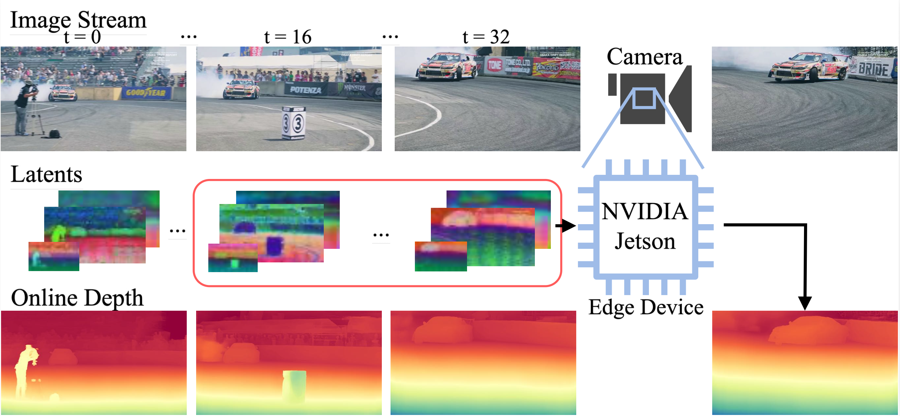
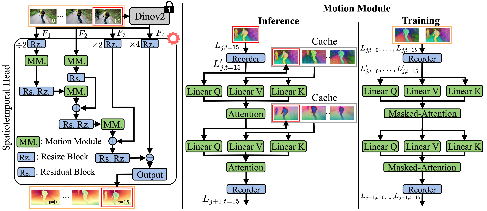

Brief introduction
Abstract.
Depth estimation from monocular video has become a key component of many real-world computer vision systems.
Recently, Video Depth Anything (VDA) has demonstrated strong performance on long video sequences.
However, it relies on batch-processing which prohibits its use in an online setting.
In this work, we overcome this limitation and introduce online VDA (oVDA).
The key innovation is to employ techniques from Large Language Models (LLMs), namely, caching latent features
during inference and masking frames at training. Our oVDA method outperforms all competing online video depth
estimation methods in both accuracy and VRAM usage. Low VRAM usage is particularly important for deployment
on edge devices. We demonstrate that oVDA runs at 42 FPS on an NVIDIA A100 and at 20 FPS on an NVIDIA Jetson
edge device. We will release both, code and compilation scripts, making oVDA easy to deploy on low-power hardware.
 Overview.
Online Video Depth Anything (oVDA) is an online adaptation of Video Depth Anything (VDA) that enables fast,
memory-efficient, and temporally consistent depth prediction for arbitrary long videos. Building upon the
strong single-frame prior of Depth Anything v2 and the spatiotemporal architecture of VDA, oVDA introduces
LLM-inspired mechanisms, namely cached latent features for temporal context and masked attention during
training. This enables real-time inference, even on low-power devices.
During training, we fine-tune the spatiotemporal head using a masked-attention strategy that restricts
attention to past frames while preserving batch-wise processing. This encourages the model to learn causal
temporal relationships consistent with online inference. To further enhance stability, we introduce a
scale-and-shift consistency loss that encourages predictions of consecutive frames to remain aligned over time.
Overview.
Online Video Depth Anything (oVDA) is an online adaptation of Video Depth Anything (VDA) that enables fast,
memory-efficient, and temporally consistent depth prediction for arbitrary long videos. Building upon the
strong single-frame prior of Depth Anything v2 and the spatiotemporal architecture of VDA, oVDA introduces
LLM-inspired mechanisms, namely cached latent features for temporal context and masked attention during
training. This enables real-time inference, even on low-power devices.
During training, we fine-tune the spatiotemporal head using a masked-attention strategy that restricts
attention to past frames while preserving batch-wise processing. This encourages the model to learn causal
temporal relationships consistent with online inference. To further enhance stability, we introduce a
scale-and-shift consistency loss that encourages predictions of consecutive frames to remain aligned over time.


Online inference with cached temporal context.
At test time, oVDA maintains a sliding window of past latent features, which serve as keys and values for
cross-attention when predicting the current frame. As new frames arrive, the cache is updated by appending
the latest feature and discarding the oldest one, enabling efficient temporal reasoning without recomputing
the full window. This design ensures stable scale- and shift-invariant depth predictions over long sequences
while keeping VRAM usage extremely low—making oVDA suitable even for edge devices such as the NVIDIA Jetson.
We provide two models with different temporal window sizes: with less temporal context (8 frames instead of 16),
oVDA is faster and requires less memory, but loses accuracy compared with oVDA using 16 context frames.